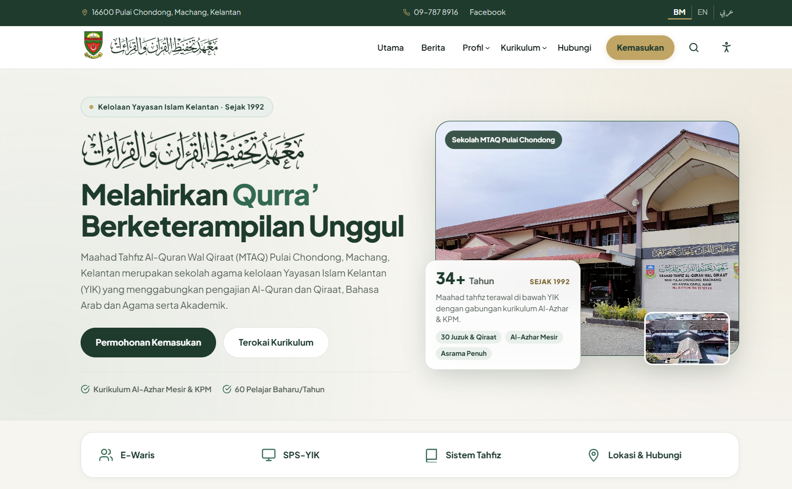

Projek 01 · Portal Rasmi Sekolah
Website Rasmi MTAQ Pulai Chondong
Laman web rasmi Maahad Tahfiz Al-Quran Wal Qiraat (YIK) di mtaqpc.edu.my berserta laman ujian baru.mtaqpc.edu.my.

Apa Yang Telah Dibuat
- Membina tema blok WordPress tersuai (
mtaq) dengan identiti korporat hijau gelap (#14301f) & emas (#c9a227), khat rasmi, dan templat lengkap (laman utama, halaman, pos, carian, 404). - Menghasilkan halaman kandungan rasmi: Pengenalan, Sejarah Penubuhan, Carta Organisasi, Sistem Persekolahan & Tahfiz, Sukatan Hafazan (dijana skrip Python), Data Huffaz 1996–2022, dan Dasar Portal.
- Integrasi suapan berita automatik daripada halaman Facebook rasmi
mtaqpcmelalui shortcode[mtaq_facebook]dengan token System User kekal dan TTL cache 30 minit. - Menambah sokongan 3 bahasa (BM | EN | عربي RTL), panel Kebolehcapaian (saiz teks, kontras tinggi, garis bawah pautan), serta carian pantas REST API (
Ctrl+K). - Pengoptimuman SEO: skema JSON-LD
School/Organizationdalam Yoast,og:imagetersuai (1200×630), meta description automatik, dan lencongan 301 slug lama. - Terkini (23 Nov, tema 1.5.4 live di laman rasmi): susun atur Bento baharu dengan hero dan dock akses pantas, galeri program sekolah 2026, FAQ kemasukan, berita gaya majalah, audit kebolehcapaian dan prestasi (reduced-motion, skip link, sasaran sentuh 44px, skop jadual) serta mod Arab RTL penuh dengan terjemahan lengkap.
Kelebihan & Keistimewaan
- Mesra Pentadbir Tanpa Kod: Dibina sebagai WordPress Block Theme supaya guru/staf boleh mengemas kini menu, warna, dan kandungan melalui
wp-admintanpa menyentuh kod. - Berita Automatik (Zero Double-Work): Setiap hantaran di Facebook rasmi sekolah dipaparkan secara automatik di laman web beserta salinan sandaran sekiranya API tergendala.
- Aliran Kerja Selamat: Mempunyai laman klon ujian (
baru.mtaqpc.edu.my) untuk menguji tema dan kandungan sebelum diterapkan ke laman sebenar. - Aksesibiliti & Pelbagai Bahasa: Memenuhi keperluan pelawat tempatan dan antarabangsa (Bahasa Melayu, Inggeris, dan Arab).